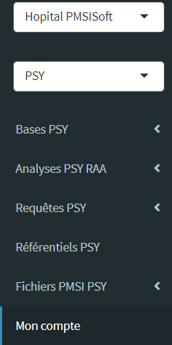

Ecrans PSY
Introduction

Les écrans sont accessibles via les menus suivants :
Bases PSY : les différents types de données PMSI brutes, enrichies de variables calculées ou rapatriées des référentiels PMSI.
Analyses PSY RAA : case-mix, graphiques et algorithmes d’analyses PMSI PSY RAA.
Requêtes PSY : requêteur métier PMSI PSY, bibliothèque de requêtes MCO “toute faites”.
Rapports PSY : rapports d’activité et d’analyse PMSI MCO téléchargeables en PDF avec données des tableaux et graphiques exportables (csv). A venir (mi-février 2023)
Référentiels PSY : référentiels PMSI enrichis à partir du package de données refpmsi
Ces écrans se présentent tous de la même façon : explications